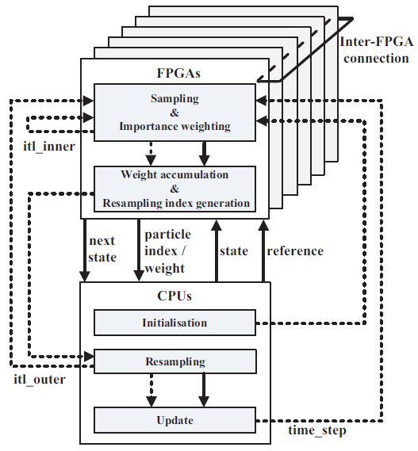
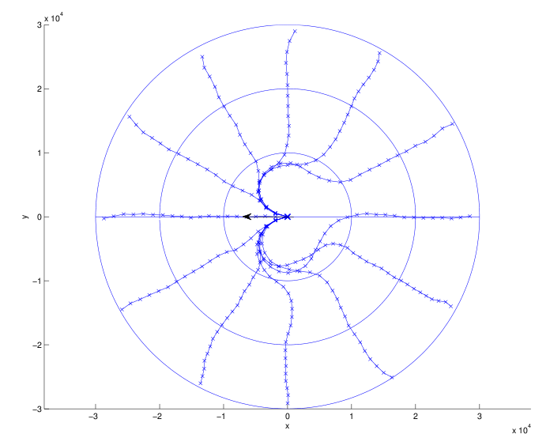

Menu:
Heterogeneous Dynamic Reconfigurable Platform for Adaptive Particle Filters / Sequential Monte Carlo Methods (SMC) in Real-time Applications
We are developing a design flow, SMCGen, for generating efficient implementation of reconfigurable SMC designs. Users can use it to develop efficient multiple-FPGA SMC applications without any knowledge of FPGA/reconfigurable computing. The design flow consists of a parametrisable SMC computation engine, and a software template which enables efficient mapping of a variety of SMC designs to FPGAs. The computation engine consists of multiple FPGAs and CPUs, and it captures the generic control structure shared among all SMC applications.
We also propose a method to adapt the number of particles dynamically and utilise the run-time reconfigurability of the FPGA for reduced power and energy consumption. It shows that the proposed adaptive particle filter can reduce up to 99% of computation time. Using run-time reconfiguration, we can substantially reduce power and energy consumption.

References:
Thomas C.P. Chau, Maciej Kurek, James Stanley Targett, Jake Humphrey, Georgios Skouroupathis, Alison Eele, Jan Maciejowski, Benjamin Cope, Kathryn Cobden, Philip Leong, Peter Y.K. Cheung and Wayne Luk, "SMCGen: Generating Reconfigurable Design for Sequential Monte Carlo Applications," in Proc. International Symposium on Field-Programmable Custom Computing Machines (FCCM), pp. 141-148, 2014. [pdf]
Maciej Kurek, Tobias Becker, Thomas C.P. Chau and Wayne Luk, "Automating Optimization of Reconfigurable Designs," in Proc. International Symposium on Field-Programmable Custom Computing Machines (FCCM), pp. 201-213, 2014. [pdf]
Thomas C.P. Chau, Xinyu Niu, Alison Eele, Wayne Luk, Peter Y.K. Cheung and Jan Maciejowski, "Mapping Adaptive Particle Filters to Heterogeneous Reconfigurable Systems," ACM Transactions on Reconfigurable Technology and Systems, accepted.
Thomas C.P. Chau, Xinyu Niu, Alison Eele, Wayne Luk, Peter Y.K. Cheung and Jan Maciejowski, "Heterogeneous Reconfigurable System for Adaptive Particle Filters in Real-Time Applications," in Proc. International Symposium on Applied Reconfigurable Computing (ARC), pp. 1-12, 2013. [pdf]
Thomas C.P. Chau, Wayne Luk, Peter Y.K. Cheung, Alison Eele and Jan Maciejowski, "Adaptive Sequential Monte Carlo Approach for Real-time Applications," in Proc. International Conference on Field Programmable Logic and Applications (FPL), pp. 527-530, 2012. [pdf]
Related Applications
Air Traffic Management: This work is about the use of a parallelised Model Predictive Control, Sequential Monte Carlo algorithm for solving the problem of conflict resolution and aircraft trajectory control in air traffic management specifically around the terminal manoeuvring area of an airport.
The target problem is nonlinear, highly constrained, non-convex and uses a single decision-maker with multiple aircraft.

References:
Thomas C.P. Chau, James Targett, Marlon Wijeyasinghe, Wayne Luk, Peter Y.K. Cheung, Benjamin Cope, Alison Eele and Jan Maciejowski, "Accelerating Sequential Monte Carlo Method for Real-time Air Traffic Management," ACM SIGARCH Computer Architecture News, accepted.
Thomas C.P. Chau, James Targett, Marlon Wijeyasinghe, Wayne Luk, Peter Y.K. Cheung, Benjamin Cope, Alison Eele and Jan Maciejowski, "Accelerating Sequential Monte Carlo Method for Real-time Air Traffic Management," in Proc. International Symposium on Highly Efficient Accelerators and Reconfigurable Technologies (HEART), 2013. Best Paper Award Candidate. [pdf]
Alison Eele, Jan Maciejowski, Thomas C.P. Chau and Wayne Luk, "Parallelisation of Sequential Monte Carlo for Real-Time Control in Air Traffic Management," in Proc. IEEE Conference on Decision and Control, 2013. [pdf]
Alison Eele, Jan Maciejowski, Thomas C.P. Chau and Wayne Luk, "Control of Aircraft in the Terminal Manoeuvring Area using Parallelised Sequential Monte Carlo," in Proc. AIAA Conference on Guidance, Navigation, and Control, 2013. [pdf]
Mobile Robot Localisation